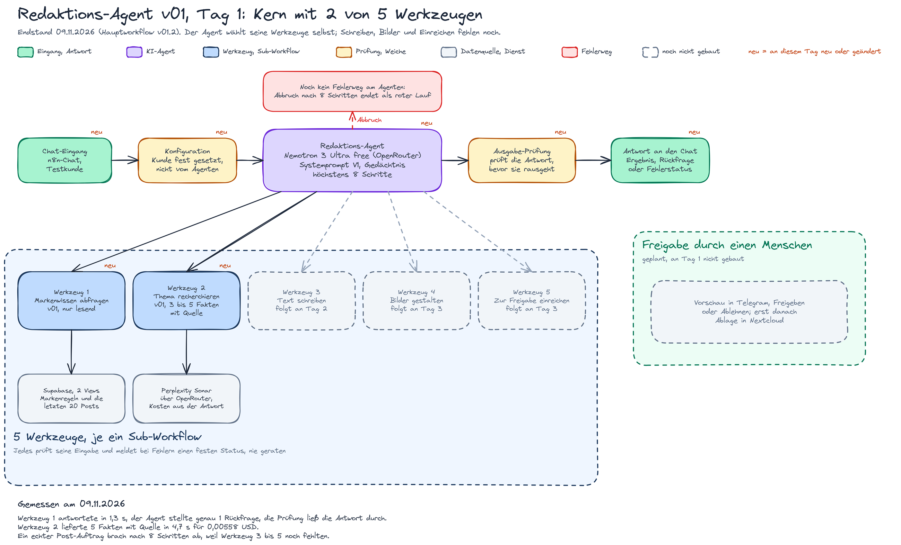
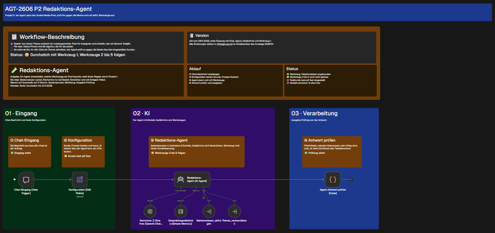
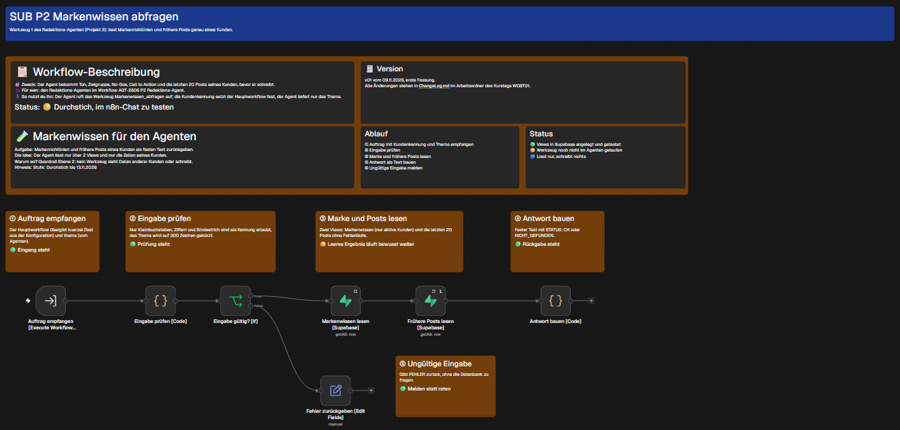
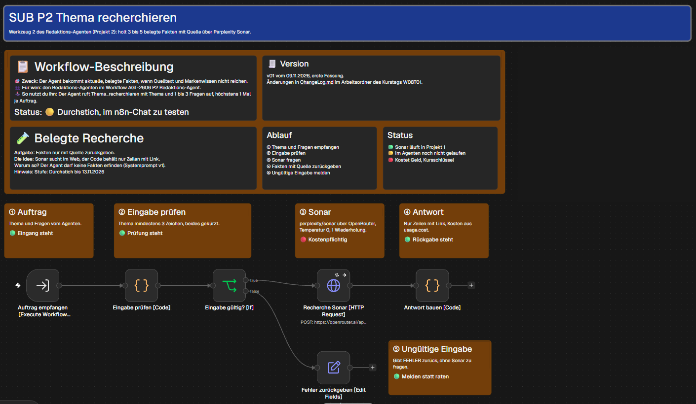

- Ziel des Tages: Klären, welches Problem der Agent löst, welche Architektur passt, welche Dienste er braucht, und einen ersten lauffähigen Kern bauen.
- Use Case: Markengerechte Posts für Instagram und LinkedIn, bei denen ein Agent selbst prüft, ob ein Thema zur Marke passt, schon gepostet wurde oder neue Fakten braucht. Ein Mensch gibt vor jeder Ablage frei.
- Gebaut: Hauptworkflow v01 mit Chat, Konfiguration, Agent, Gedächtnis, Werkzeug 1 (Markenwissen) und Werkzeug 2 (Recherche) sowie eine Ausgabe-Prüfung.
- Grenze: Ohne die Werkzeuge 3 bis 5 lief der Agent bei einem echten Post-Auftrag in „Max iterations (8)“.
Kapitel 1
Was ich mir für den Tag vorgenommen habe
Das Tagesziel.
- Das Problem in einem Satz fassen und den Use Case festlegen.
- Single-Agent oder mehrere Agenten entscheiden und die Entscheidung begründen.
- Datenquellen und Dienste benennen und jeden Zugang einmal echt aufrufen.
- Den Systemprompt als erste Fassung in eine eigene Datei schreiben.
- Einen ersten Teil in n8n bauen, damit der Agent schon etwas Echtes tut.
Die Architekturentscheidung (1 Agent mit 5 Werkzeugen) und ihre Begründung stehen ausführlich in der Projekt-Charter und in der Wochen-Doku.
Kapitel 2
Was gebaut wurde
Datenmodell, Prompt und die ersten Workflows mit Version.
| Baustein | Version | Inhalt |
|---|---|---|
| Datenbank | v01 | 2 Views k2_v_markenwissen und k2_v_fruehere_posts (nur Lesen, nur die nötigen Spalten), Spalte erzeugt_von an den Beiträgen aus Projekt 1, Testkunde test-p2 mit erfundenen Daten (p2_k2_views_v01.sql) |
| Systemprompt | V1 | 6 Bausteine: Rolle, Kontext, Vorgehen, Werkzeuge, Regeln, Fallback (Datei V1, heute archiviert) |
| Werkzeug 1 Markenwissen abfragen | v01 | liest über die 2 Views Markenregeln und die letzten 20 Posts genau eines Kunden; die Kundenkennung setzt der Workflow fest, nicht der Agent |
| Werkzeug 2 Thema recherchieren | v01 | holt 3 bis 5 belegte Fakten über Perplexity Sonar (OpenRouter), behält nur Zeilen mit Link, Kosten aus der Antwort |
| Hauptworkflow Redaktions-Agent | v01, v01.1, v01.2 | Chat-Eingang, Konfiguration, Agent (Nemotron 3 Ultra free), Gedächtnis, Werkzeug 1 und 2, Ausgabe-Prüfung; danach nur Anordnung und Notiztexte |
Alle Stände mit Uhrzeit stehen in versionen.md. Die Exporte im Repo zeigen den Stand vom 11.11.2026; die Fassungen dieses Tages liegen als eigene Dateien im Archiv und sind in versionen.md je Zeile verlinkt.








Kapitel 3
Tests und Ergebnis
Die Läufe von Tag 1, Ausführungsnummern aus n8n.
| Lauf | Test | Ergebnis | Urteil |
|---|---|---|---|
| 2564 | Post-Auftrag mit Werkzeug 1 | Werkzeug meldete „Workflow is not active“, weil der Sub noch nicht veröffentlicht war; der Agent rief es 4 Mal statt 1 Mal auf und meldete ehrlich einen Fehler | nicht bestanden |
| 2565 | derselbe Auftrag nach der Veröffentlichung | Werkzeug 1 lieferte in 1,3 s, der Agent stellte genau 1 Rückfrage, die Ausgabe-Prüfung ließ die Antwort durch | bestanden |
| 2567 | Post-Auftrag, für den Schreiben, Bilder und Einreichen nötig sind | Agent brach mit „Max iterations (8)“ ab, weil die Werkzeuge 3 bis 5 noch fehlten | nicht bestanden |
| 2569 (Sub 2571) | Recherche über Werkzeug 2 | Werkzeug 2 lieferte 5 Fakten mit Quelle in 4,7 s für 0,00558 USD; der Hauptlauf endete wieder im Fehler, weil Werkzeug 3 bis 5 fehlten | Werkzeug bestanden |
Vor dem Bau lief Projekt 1 nach der Datenbank-Änderung 2 Mal fehlerfrei (Läufe 2559 und 2562). Dieselben Läufe sind der erste echte Aufruf der Dienste. Nicht getestet waren an diesem Tag Jina Reader und der direkte Weg zu NVIDIA.
Kapitel 4
Offen nach Tag 1
Was am Abend fehlte und am nächsten Tag drankam.
- Werkzeuge 3 bis 5 (Text, Bilder, Einreichen) fehlen; der Agent kann deshalb keinen Post fertigstellen.
- Ein Fehlerweg am Agenten fehlt: Ein Abbruch in „Max iterations“ endet als roter Lauf statt mit einem festen Satz.
- Die Ausgabe-Prüfung kann noch nicht unterscheiden, ob eine gemeldete Beitrags-ID wirklich aus einem Werkzeug stammt.
- Das bezahlte Werkzeug 2 hat nur eine Grenze im Prompt, keine harte Grenze im Workflow.